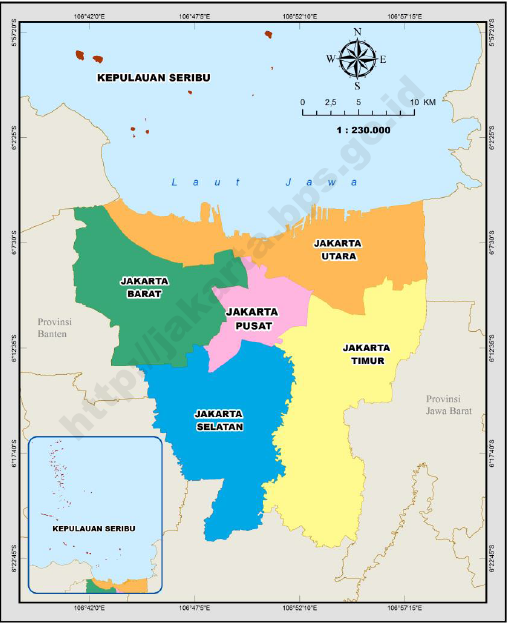

Sejarah

Jakarta indonesia adalah ibu kota dan kota terbesar Indonesia. Terletak di estuari Sungai Ciliwung,
di bagian barat laut Jawa, daerah ini telah lama menopang pemukiman manusia. Bukti bersejarah dari
Jakarta berasal dari abad ke-4 M, saat ia merupakan sebuah permukiman dan pelabuhan Hindu. Kota ini
telah diklaim secara berurutan oleh kerajaan bercorak India Tarumanegara, Kerajaan Sunda Hindu,
Kesultanan Banten Muslim, dan oleh pemerintahan Belanda, Jepang, dan Indonesia.[1] Hindia Belanda
membangun daerah tersebut sebelum direbut oleh Kekaisaran Jepang semasa Perang Dunia II dan akhirnya
menjadi merdeka sebagai bagian dari Indonesia.
Jakarta telah dikenal dengan beberapa nama. Ia disebut Sunda Kelapa selama periode Kerajaan Sunda
dan Jayakarta, Djajakarta, atau Jacatra selama periode singkat Kesultanan Banten. Setelah itu,
Jakarta berkembang dalam tiga tahap. "Kota Tua Jakarta", yang dekat dengan laut di utara, berkembang
antara 1619 dan 1799 pada era VOC. "Kota baru" di selatan berkembang antara 1809 dan 1942 setelah
pemerintah Belanda mengambil alih penguasaan Batavia dari VOC yang gagal yang sewanya telah berakhir
pada 1799. Yang ketiga adalah perkembangan Jakarta modern sejak proklamasi kemerdekaan pada 1945. Di
bawah pemerintahan Belanda, ia dikenal sebagai Batavia (1619–1949), dan Djakarta (dalam bahasa
Belanda) atau Jakarta, selama pendudukan Jepang dan masa modern
Geografis

Jakarta berlokasi di sebelah utara Pulau Jawa, di muara Ci Liwung, Teluk Jakarta. Jakarta terletak di
dataran rendah pada ketinggian rata-rata 8 meter dpl. Sebelah selatan Jakarta merupakan daerah
pegunungan dengan curah hujan tinggi. Jakarta dilewati oleh 13 sungai yang semuanya bermuara ke
Teluk Jakarta. Sungai yang terpenting ialah Ci Liwung, yang membelah kota menjadi dua. Sebelah timur
dan selatan Jakarta berbatasan dengan provinsi Jawa Barat dan di sebelah barat berbatasan dengan
provinsi Banten.
Kepulauan Seribu merupakan kabupaten administratif yang terletak di Teluk Jakarta. Sekitar 105 pulau
terletak sejauh 45 km (28 mil) sebelah utara kota.
Iklim
Jakarta memiliki suhu udara yang panas dan kering atau beriklim tropis. Terletak di bagian barat
Indonesia, Jakarta mengalami puncak musim penghujan pada bulan Januari dan Februari dengan rata-rata
curah hujan 350 milimeter dengan suhu rata-rata 27 °C. Curah hujan antara bulan Januari dan awal
Februari sangat tinggi, puncak musim kemarau pada bulan Agustus dengan rata-rata curah hujan 60
milimeter . Bulan September dan awal oktober adalah hari-hari yang sangat panas di Jakata, suhu
udara dapat mencapai 40 °C .[5]. Suhu rata-rata tahunan berkisar antara 25°-38 °C (77°-100 °F).[6]
Wisata
Di Jakarta terdapat bangunan-bangun tua yang menjadi obyek wisata salah satunya adalah Monas dan Museum Jakarta biasa orang menyebutnya kota tua.
Monumen Nasional
Monumen Nasional atau yang populer disingkat dengan Monas atau Tugu Monas adalah monumen
peringatan setinggi 132 meter (433 kaki) yang didirikan untuk mengenang perlawanan dan
perjuangan rakyat Indonesia untuk merebut kemerdekaan dari pemerintahan kolonial Hindia Belanda.
Pembangunan monumen ini dimulai pada tanggal 17 Agustus 1961 di bawah perintah presiden Sukarno
dan dibuka untuk umum pada tanggal 12 Juli 1975. Tugu ini dimahkotai lidah api yang dilapisi
lembaran emas yang melambangkan semangat perjuangan yang menyala-nyala. Monumen Nasional
terletak tepat di tengah Lapangan Medan Merdeka, Jakarta Pusat.
Kota Tua Jakarta, juga dikenal dengan sebutan Batavia Lama (Oud Batavia), adalah sebuah wilayah
kecil di Jakarta, Indonesia. Wilayah khusus ini memiliki luas 1,3 kilometer persegi melintasi
Jakarta Utara dan Jakarta Barat (Pinangsia, Taman Sari dan Roa Malaka).
Dijuluki "Permata Asia" dan "Ratu dari Timur" pada abad ke-16 oleh pelayar Eropa, Jakarta Lama
dianggap sebagai pusat perdagangan untuk benua Asia karena lokasinya yang strategis dan sumber
daya melimpah.